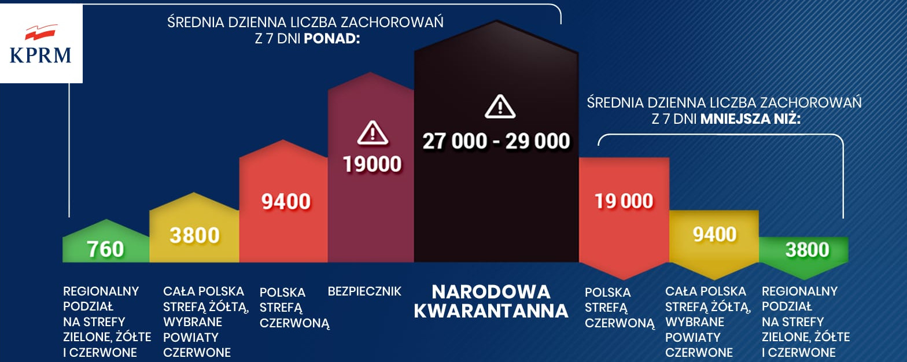
📲 Unijny Certyfikat Covid możesz mieć teraz zawsze przy sobie.
— Ministerstwo Zdrowia (@MZ_GOV_PL) June 21, 2021
Wystarczy telefon z aplikacją #mObywatel lub #mojeIKP.
Więcej ➡️ https://t.co/pvTa7qUtd3 pic.twitter.com/83aYsU9TpM
🦠 Koronawirus na długo ograniczył naszą swobodę i utrudnił życie.
— Ministerstwo Zdrowia (@MZ_GOV_PL) April 24, 2021
🧍↔️🧍Dystans
🧼👐💦 Dezynfekcja
😷 Maseczka
- to codzienność, do której się przyzwyczailiśmy.
Wykonajmy wspólnie ostatni krok, by pokonać pandemię.
Ramie w ramię, by walczyć z koronawirusem❗ 💉💪#SzczepimySię pic.twitter.com/vzfgDqcNt7
Przestrzegaj zasad bezpieczeństwa❗️
— Ministerstwo Zdrowia (@MZ_GOV_PL) February 26, 2021
✅ Dystans 🧍↔️🧍
✅ Dezynfekcja 🧼👏
✅ Maseczka 😷
✅ Aplikacja #StopCovid 📱
✅ Wietrzenie pomieszczeń 💨 pic.twitter.com/H2KR77dtxr
Biohazard symbol - color changing according to the 7-day average infection threshold.
Symbol zagrożenia biologicznego - przybierający kolor adekwatnie do progu 7 dniowej średniej zakażeń.
07/22/2021 - First attempts to automate in 100% of the web application
"SARS-CoV-2_Poland"
I am currently working on the automation of my SARS-CoV-2 virus web application in Poland, based on google spreadsheets and other web tools. Finally, 100% of the automation will be completed by the Python programming language👍💚🐍💙✌, the program of which will work in Google Cloud.
For technical reasons: the process of automatic data update and a few manual operations should be completed - currently by 11:15 am every day. I am working hard to ensure that this process is 100% automatically completed almost in real time, after updating CSV data from the government report.
My need to automate and visualize calculations in connection with the SARS-CoV-2 virus epidemic in Poland, was born of ordinary manual calculations - the final result of which will be a 100% automated, socially useful web application.
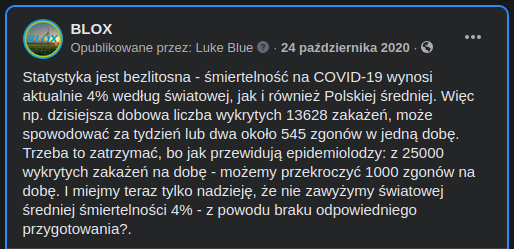
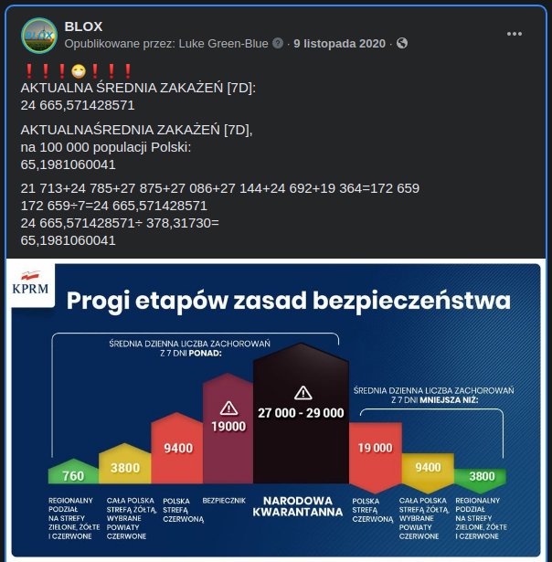
22.07.2021 - Pierwsze próby automatyzacji w 100% aplikacji webowej
"SARS-CoV-2_Poland"
Aktualnie pracuję nad automatyzacją mojej aplikacji webowej dotyczącej wirusa SARS-CoV-2 w Polsce, opartej na arkuszach google i innych narzędziach webowych. Finalnie 100% automatyzacji, z założenia będzie miał dopełnić język programowania Python👍💚🐍💙✌, którego program będzie pracował w Google Cloud.
Ze względów technicznych: proces automatycznej aktualizacji danych i kilku operacji ręcznych, powinien być zakańczany - aktualnie każdego dnia do godziny 11:15. Intensywnie pracuję nad tym - aby ten proces był zakańczany w 100% automatycznie niemal w czasie rzeczywistym, po aktualizacji danych CSV z rządowego raportu.
Moja potrzeba automatyzacji i wizualizacji obliczeń w związku z epidemią wirusa SARS-CoV-2 w Polsce, zrodziła się ze zwyczajnych manualnych obliczeń - czego finalnym efektem będzie w 100% zautomatyzowana przydatna społecznie aplikacja webowa.
08/03/2021 - Step by step, learning 100% automation of my web application with the help of Python - is moving forward.
03.08.2021 - Krok za krokiem, nauka 100% automatyzacji mojej aplikacji webowej z pomocą Python-a - postępuje do przodu. 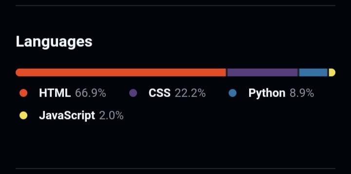
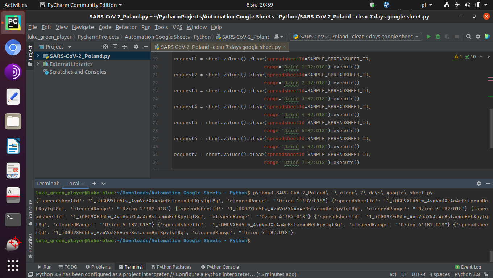
08/15/2021 First attempts to automate the SARS-CoV-2_Poland application with the help of Google Cloud and its very useful tools:
15.08.2021 Pierwsze próby automatyzacji aplikacji SARS-CoV-2_Poland z pomocą Google Cloud i jej bardzo przydatnych narzędzi:
#CloudScheduler #CronJobSchedules #PubSub #CloudFunctions #CloudStorage #BigQuery #SQL #SheetGo .
#ConnectedSheets ???:
I don't have one yet ;-).
Jeszcze nie posiadam ;-).


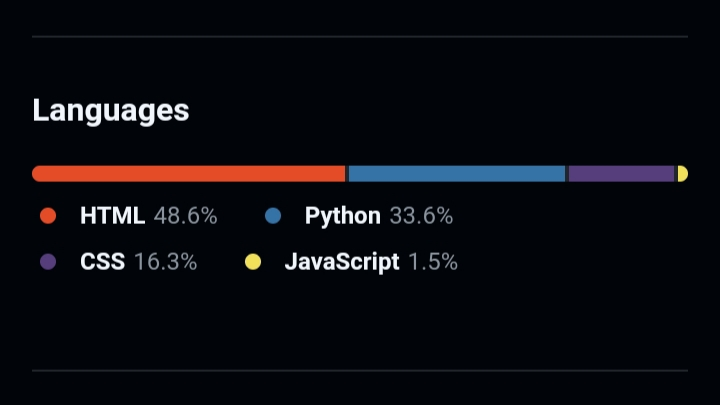
The next step will be to run Python scripts on the Cron Job Schedules from:
Następnym krokiem będzie uruchamianie skryptów Pythona według Harmonogramu Zadań Crona z:
#GoogleComputeEngine
08/22/2021 - All in my phone with #Android 👌🚀✌:
22.08.2021 - Wszystko na moim telefonie z Androidem 👌🚀✌:
#GoogleComputeEngine #Linux #Ubuntu #Terminal #VIM #PythonScript #HackersKeyboard #StopCovid #SARSCoV2Poland #BLOX #GitHub #Python #PythonDeveloper #GoogleDevelopers #GoogleAPIs #GoogleAnalytics #GoogleCloud #GoogleSheets #DataWrapper #CouplerIO #Automation
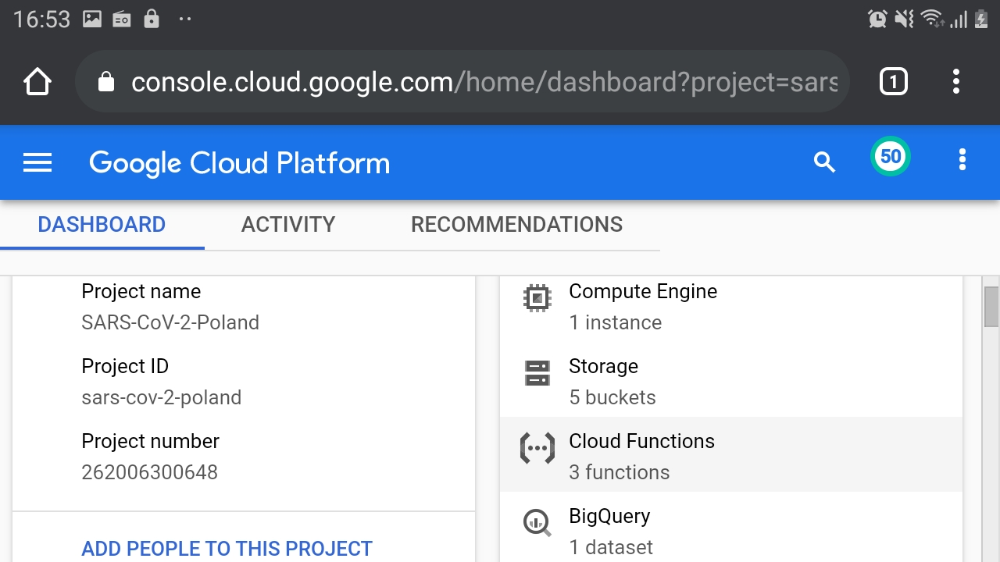
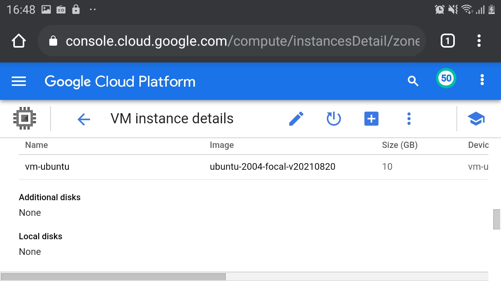
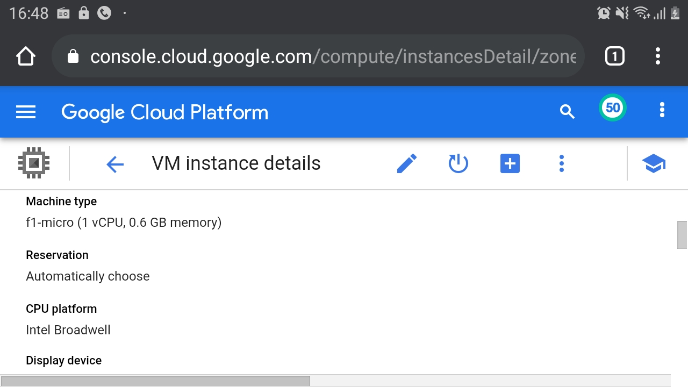
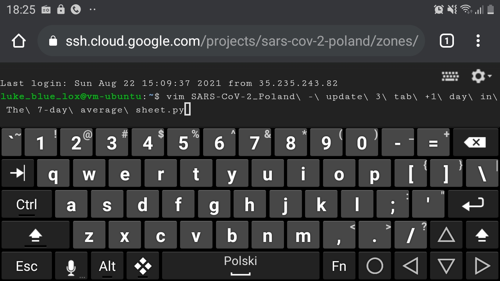
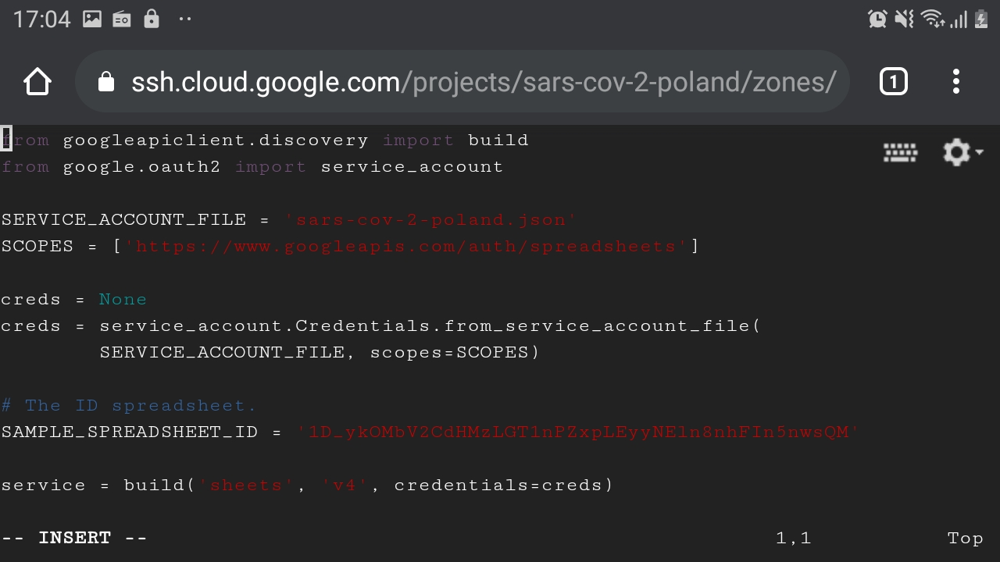
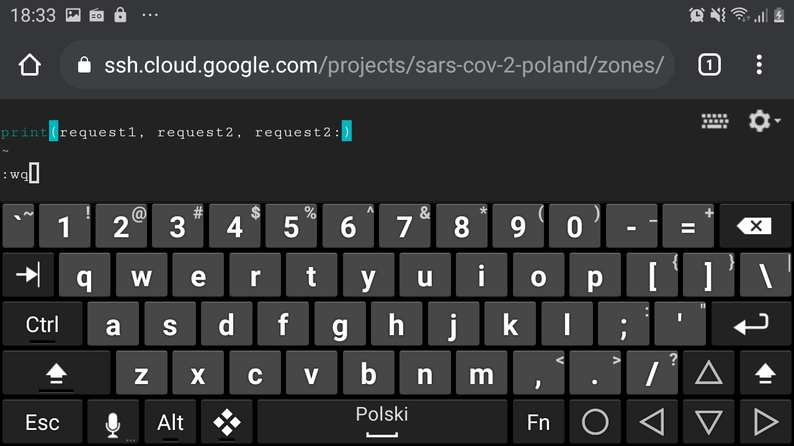
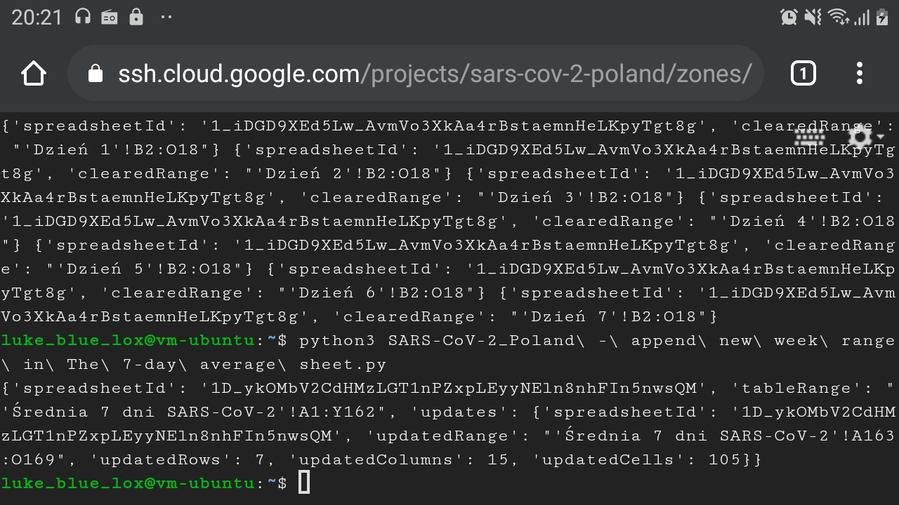
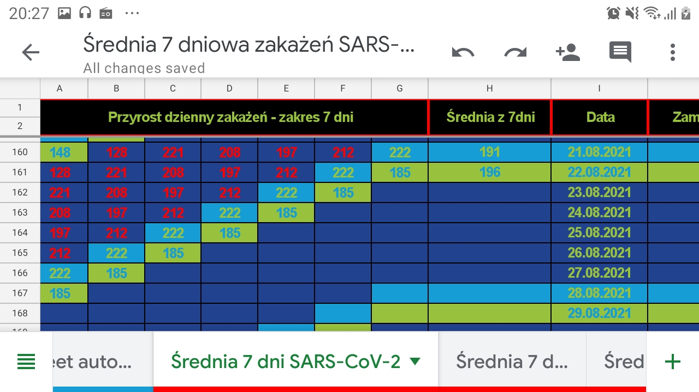
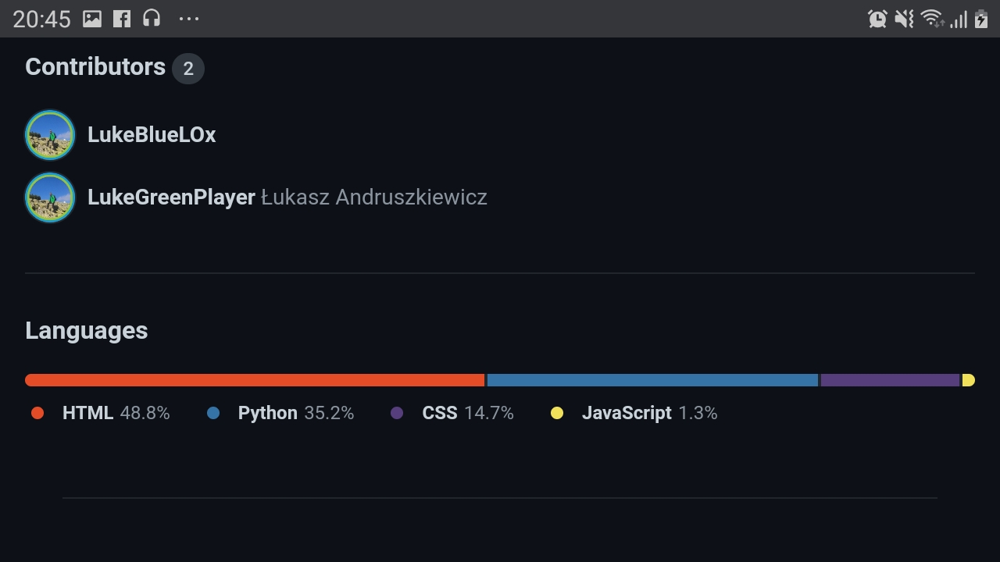
09/07/2021 - I was able to run my test Python scripts in the shell of my booting VM-Ubuntu virtual machine on GCP. Tomorrow will be a test on a living organism according to the schedule and functions with Python scripts triggered by HTTP protocol according to the CRON clock, which are to start my virtual machine automatically at 11:05 AM and stop at 11:20 AM CEST WARSAW 👍✌🙂
07.09.2021 - Udało mi się uruchomić moje testowe skrypty Pythona w powłoce mojej startującej maszyny wirtualnej VM-Ubuntu na GCP. Jutro będzie test na żywym organizmie według harmonogramu i funkcjami ze skryptami Pythona wyzwalanymi prze protokół HTTP według zegara CRON, które mają uruchomić moją maszynę wirtualną automatycznie o 11:05 AM i zatrzymać o 11:20 AM CEST WARSAW 👍✌🙂
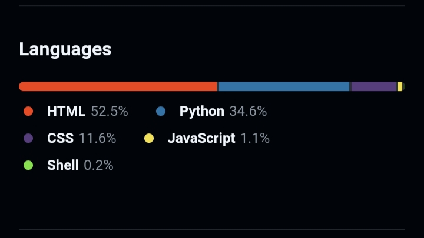


CSV data visualization from the website:
SARS-CoV-2 coronavirus infections report
Wizualizacja danych CSV ze strony:
Raport zakażeń koronawirusem SARS-CoV-2
An attempt to present the real number of infections SARS-CoV-2 based on the number of COVID-19 deaths. The chart presented below is a fragment presenting an attempt to develop the most reliable method of presenting the real number of SARS-CoV-2 infections. Task 2 is still under development.
Próba przedstawienia rzeczywistej liczby zakażeń SARS-CoV-2 na podstawie liczby zgonów z powodu COVID-19. Przedstawiony poniżej wykres, jest wycinkiem prezentującym próbę opracowania jak najbardziej miarodajnej metody przedstawienia rzeczywistej liczby zakażeń SARS-CoV-2. Zadanie 2 jest w dalszym ciągu w fazie rozwoju.

Blue Liquid Oxygen
BLOX - Technical Social Organization
✌💙💚♻️🚀🌌🌍🌎🌏🌌🛰♻️💚💙✌
Błękitny Ciekły Tlen
BLOX - Społeczna Organizacja Techniczna
✌💙💚♻️🚀🌌🌍🌎🌏🌌🛰♻️💚💙✌


"A FLAME FOR THE RIGHTEOUS"
"PŁOMIEŃ DLA SPRAWIEDLIWYCH"
Zadora

Created by:
Technical Social Organization
Stworzone Przez:
Społeczna Organizacja Techniczna

If you want to go to the main page - click on the picture
Jeśli chcesz przejść na stronę główną - kliknij obrazek